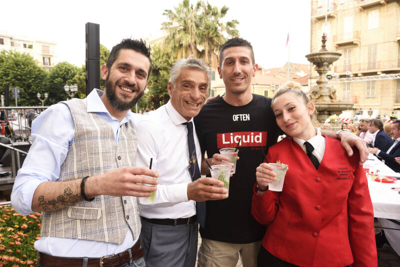

2019
La prima volta
Il primo Cocktail Contest di Alassio. Il 4 aprile all'Istituto Giancardi–Galilei–Aicardi le selezioni e i finalisti; il 7 giugno la finale in Piazza della Libertà.
Vince Giuseppe Manzo del Liquido cocktail bar con «Un bacio a Rio»: richiama i celebri Baci di Alassio, ma bilancia il dolce con l'acido del frutto della passione e dell'arancio. Il premio: la piastrella firmata sul Muretto di Alassio.
